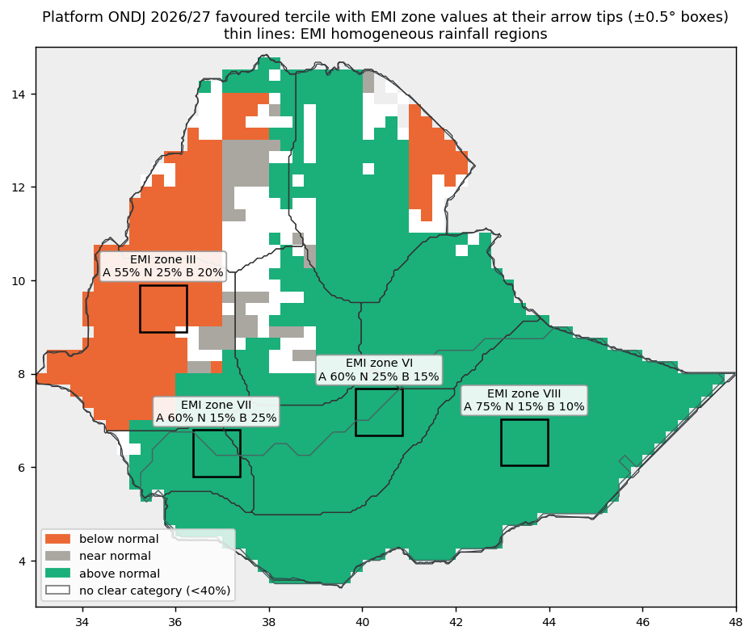
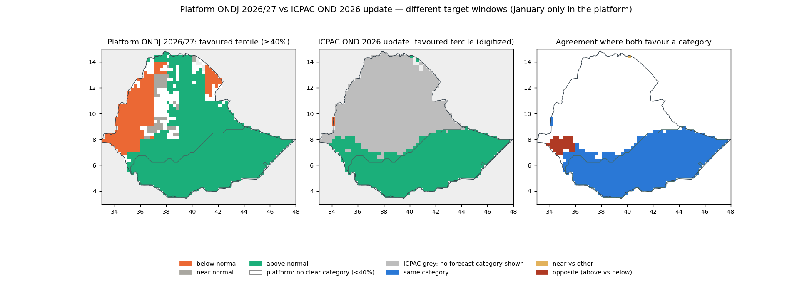
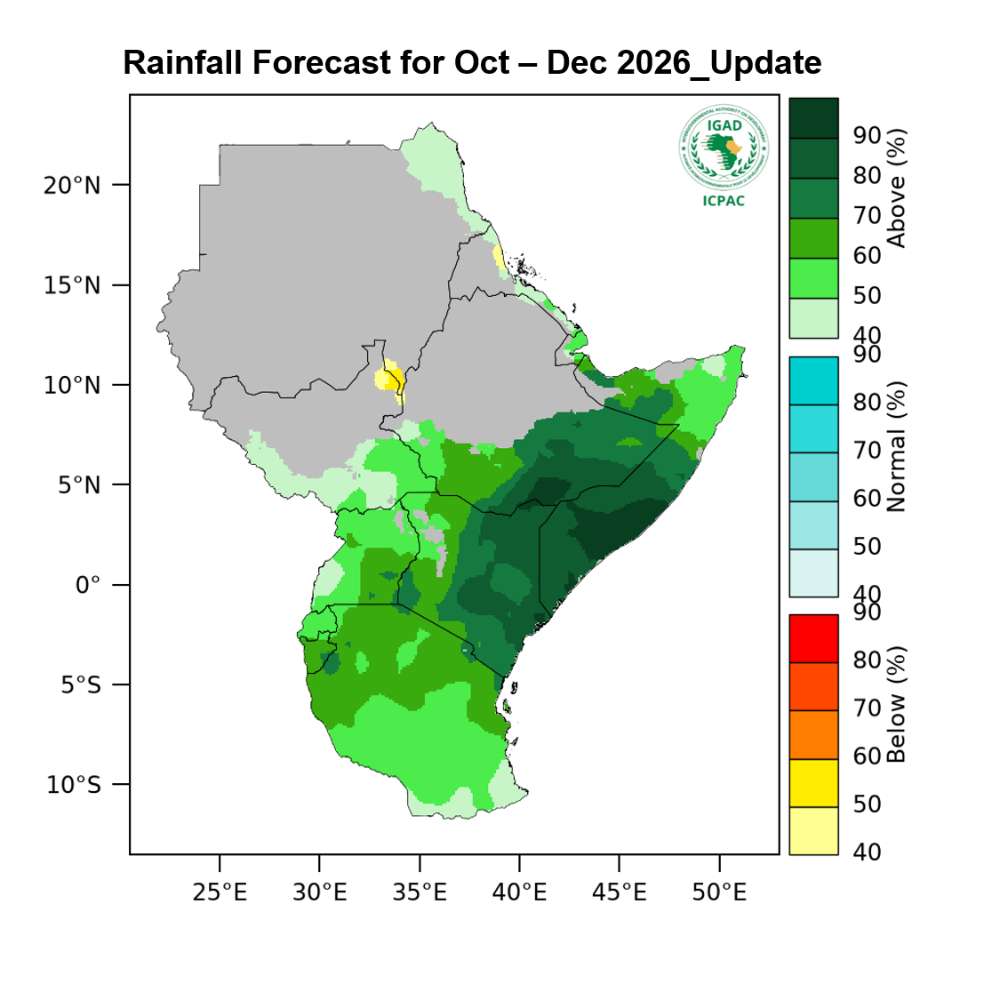
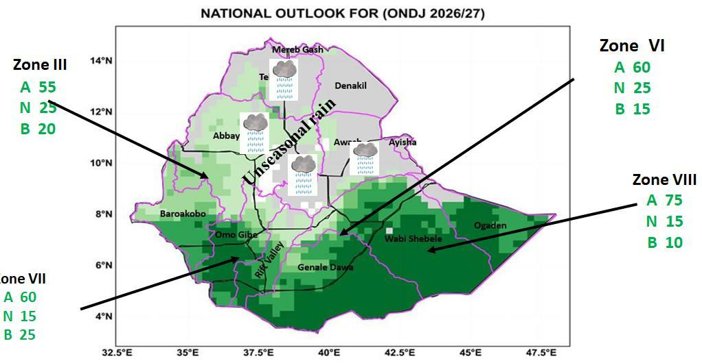

Generated 2026-10-09T10:50:31+00:00 by interpret_external_forecasts.py (rules v2). Platform forecast: outputs/final_shared_blend/init09_ONDJ/2026/forecast_2026.nc (SHA-256 db0578a6365e). Items marked [draft] use extraction records not yet checked by a person and are not published.


| Location | Official below / near / above | Platform neighbourhood below / near / above | Relationship | Share of sample in the domain |
|---|---|---|---|---|
| Zone III | 20% / 25% / 55% | 50% / 31% / 19% | Opposing categories | 0% |
| Zone VI | 15% / 25% / 60% | 22% / 24% / 54% | Same category | 44% |
| Zone VII | 25% / 15% / 60% | 24% / 21% / 55% | Same category | 69% |
| Zone VIII | 10% / 15% / 75% | 19% / 24% / 57% | Same category | 100% |
Platform values: area mean of local probabilities within ±0.5° of each arrow tip, not the complete EMI zone. Rounded to add up to 100%.
The platform favours below-normal rainfall near the arrow of EMI zone III, while the EMI outlook favours above-normal rainfall. This indicates disagreement in the favoured rainfall category. EMI prints 20% / 25% / 55% (below / near / above); the platform's area mean of local probabilities in the sampled neighbourhood is 50% / 31% / 19%.
Both outlooks favour wetter-than-normal conditions near the arrow of EMI zone VI. EMI prints 15% / 25% / 60% (below / near / above); the platform's area mean of local probabilities in the sampled neighbourhood is 22% / 24% / 54%.
Both outlooks favour wetter-than-normal conditions near the arrow of EMI zone VII. EMI prints 25% / 15% / 60% (below / near / above); the platform's area mean of local probabilities in the sampled neighbourhood is 24% / 21% / 55%.
Both outlooks favour wetter-than-normal conditions near the arrow of EMI zone VIII. EMI prints 10% / 15% / 75% (below / near / above); the platform's area mean of local probabilities in the sampled neighbourhood is 19% / 24% / 57%.
For every EMI zone, the platform value is the area mean of local probabilities within ±0.5° of the arrow tip, not the complete EMI zone: the figure publishes no zone boundaries and no reference period, so exact zone probability differences are not calculated.
Above-normal rainfall is the predominant tendency in both outlooks over their shared displayed area in Ethiopia, with localized disagreement. ICPAC shows a favoured category on 46% of Ethiopia and no forecast category shown (the legend does not explain the grey areas) on 54%; where it shows one it favours above normal on >99%, most often at 70-80% and 80-90%. The platform favours above normal on 71% and below normal on 17% of Ethiopia. There is category agreement of 94.5% within the compared area, which covers 45% of the analysed national area; opposite categories (above vs below) on 5% of the compared area. ICPAC publishes only the favoured category and its probability interval, so probabilities are not differenced. The official outlook covers Oct 2026–Dec 2026 and the platform Oct 2026–Jan 2027 (Jan 2027 only in the platform), so this compares spatial tendencies, not probabilities for the same seasonal event.
Both outlooks favour above normal rainfall throughout the part of the ONDJ R3 (Deyr) rainfall domain where both show a favoured category. ICPAC shows a favoured category on >99% of the ONDJ R3 (Deyr) rainfall domain and no forecast category shown (the legend does not explain the grey areas) on <1%; where it shows one it favours above normal on 100%, most often at 70-80% and 80-90%. The platform favours above normal on 100% and below normal on 0% of the ONDJ R3 (Deyr) rainfall domain. There is category agreement of 100% within the compared area, which covers >99% of the analysed domain. ICPAC publishes only the favoured category and its probability interval, so probabilities are not differenced. The official outlook covers Oct 2026–Dec 2026 and the platform Oct 2026–Jan 2027 (Jan 2027 only in the platform), so this compares spatial tendencies, not probabilities for the same seasonal event.
Not calculated: rainfall-anomaly differences, because no official rainfall-amount anomaly product was found in the checked ICPAC and EMI products; which forecast is more accurate, because that needs observations and a separate verification design (see Verification); zone-mean platform probabilities for EMI zones, because the zone boundaries are not published with the figure; same-event probability differences, because the target windows or spatial supports differ and ICPAC publishes only favoured-category intervals.
| Provider / product | ICPAC · rainfall_tercile_probability · dominant_category_map |
|---|---|
| Label | Rainfall forecast - October - December 2026_Update - IGAD Region |
| Target period | 2026-10-01 to 2026-12-31 |
| Issue date | not stated by the provider |
| Initialization | not stated |
| Reference period | not stated |
| Retrieved | 2026-10-09T08:44:54+00:00 |
| HTTP Last-Modified (not the issue date) | Tue, 06 Oct 2026 06:52:00 GMT |
| Source page | https://www.icpac.net/seasonal-forecast/october-december-2026_update/?region=1&resource_type=27 |
| Download | https://www.icpac.net/media/images/GHA-PRCP.original.png |
| SHA-256 | 38789cddd2e31c49b72ec97b821856d1d82d100e75971aef173b8f28d276afa6 |
| Extraction | validated · automatic_raster_digitization · record config/external_forecasts/extractions/icpac_ond_2026_update_rainfall.json |
| Review | {"reviewer": "Yonas 1", "reviewed_utc": "2026-10-09T09:21:08+00:00", "decision": "validated", "note": null, "confirmed_checks": ["The map title reads 'Rainfall Forecast for Oct - Dec 2026_Update' (OND 2026, IGAD region).", "Colour bars from top to bottom are Above (boxes 40-50 ... 90-100 %), Normal and Below (boxes 40-50 ... 80-90 %).", "Axis ticks are 25-50 deg E and 10 deg S - 20 deg N in 5-degree steps (plain latitude-longitude map).", "The digitized comparison map (outputs/.../comparisons/maps/icpac_digitized.png) matches the original over Ethiopia.", "Grey areas are treated as 'no forecast shown'."], "source_sha256": "38789cddd2e31c49b72ec97b821856d1d82d100e75971aef173b8f28d276afa6", "content_sha256": "ece360f66b6c5a4eb8adfc5e9f84c3178fa3ca0d16db2907e5e534ac3467b06f", "content_hash_note": "Added 2026-10-09 when reviews were bound to the extraction contents; the record contents are unchanged since this review (commit f477821)."} |

| Provider / product | EMI · rainfall_tercile_probability · zone_tercile_probabilities |
|---|---|
| Label | Kiremt 2026 Assessment and Bega 2026_27 Outlook Hydro met Bulletin |
| Target period | 2026-10-01 to 2027-01-31 |
| Issue date | not stated by the provider |
| Initialization | not stated |
| Reference period | not stated |
| Retrieved | 2026-10-09T08:45:10+00:00 |
| HTTP Last-Modified (not the issue date) | — |
| Source page | https://www.ethiomet.gov.et/products/seasonal-hydromet-bulletin/kiremt-2026-assessment-and-bega-2026_27-hydro-met-bulletin/ |
| Download | https://www.ethiomet.gov.et/documents/796/Kiremt_2026_Assesment_and_Bega_2026_27_Outlook_hydromet_Bulletin_pVHz8Fp.pdf |
| SHA-256 | d55c4d39500d13a9da842a575f735bd07cf2ed08ac924ec8012e197a66e921a1 |
| Extraction | validated · draft_figure_transcription · record config/external_forecasts/extractions/emi_bega_2026_27_outlook.json |
| Review | {"reviewer": "yonas 1", "reviewed_utc": "2026-10-09T09:20:42+00:00", "decision": "validated", "note": null, "confirmed_checks": ["PDF page 21 figure is titled 'NATIONAL OUTLOOK FOR (ONDJ 2026/27)'.", "Printed values per zone, in the printed order A (above), N (normal), B (below): III 55/25/20, VI 60/25/15, VII 60/15/25, VIII 75/15/10.", "Zone VII label is partly cut at the figure's left edge ('one VII'); the values are fully legible.", "Arrow-tip locations (approximate, +/- 0.5 deg) correspond to the arrow heads in the figure.", "No reference period is stated for the probabilities."], "source_sha256": "d55c4d39500d13a9da842a575f735bd07cf2ed08ac924ec8012e197a66e921a1", "content_sha256": "1fd91db56555f45ff0ab775944d63dd196ca9b212e6f35110ac7b381be7d3428", "content_hash_note": "Added 2026-10-09 when reviews were bound to the extraction contents; the record contents are unchanged since this review (commit f477821)."} |

| Metric | Source / area | Status | Reason | Value (draft values shown for review) |
|---|---|---|---|---|
| display_official_probabilities | emi_bega_2026_27_outlook III | available | {"below": 0.2, "near": 0.25, "above": 0.55} | |
| favoured_category_relationship | emi_bega_2026_27_outlook III | available | "opposing_favoured_categories" | |
| zone_mean_probability | emi_bega_2026_27_outlook III | unavailable | zone_geometry_requires_alignment | |
| same_event_probability_difference | emi_bega_2026_27_outlook III | unavailable | zone_geometry_requires_alignment; official_reference_period_unknown | |
| display_official_probabilities | emi_bega_2026_27_outlook VI | available | {"below": 0.15, "near": 0.25, "above": 0.6} | |
| favoured_category_relationship | emi_bega_2026_27_outlook VI | available | "same_favoured_category" | |
| zone_mean_probability | emi_bega_2026_27_outlook VI | unavailable | zone_geometry_requires_alignment | |
| same_event_probability_difference | emi_bega_2026_27_outlook VI | unavailable | zone_geometry_requires_alignment; official_reference_period_unknown | |
| display_official_probabilities | emi_bega_2026_27_outlook VII | available | {"below": 0.25, "near": 0.15, "above": 0.6} | |
| favoured_category_relationship | emi_bega_2026_27_outlook VII | available | "same_favoured_category" | |
| zone_mean_probability | emi_bega_2026_27_outlook VII | unavailable | zone_geometry_requires_alignment | |
| same_event_probability_difference | emi_bega_2026_27_outlook VII | unavailable | zone_geometry_requires_alignment; official_reference_period_unknown | |
| display_official_probabilities | emi_bega_2026_27_outlook VIII | available | {"below": 0.1, "near": 0.15, "above": 0.75} | |
| favoured_category_relationship | emi_bega_2026_27_outlook VIII | available | "same_favoured_category" | |
| zone_mean_probability | emi_bega_2026_27_outlook VIII | unavailable | zone_geometry_requires_alignment | |
| same_event_probability_difference | emi_bega_2026_27_outlook VIII | unavailable | zone_geometry_requires_alignment; official_reference_period_unknown | |
| mapped_category_agreement | icpac_ond_2026_update_rainfall All Ethiopia | available | {"area_share_official_forecast_shown": 0.45743178559016606, "area_share_official_no_forecast": 0.5425682144098339, "area_share_both_favoured": 0.4547253409135862, "agreement_share_where_both_favoured": 0.9447805785027835, "opposing_share_where_both_favoured": 0.0537600725367427, "official_category_shares": {"below": 0.004432769306102842, "near": 0.0, "above": 0.9955672306938971}, "official_interva | |
| mapped_category_agreement | icpac_ond_2026_update_rainfall ONDJ R3 (Deyr) rainfall domain | available | {"area_share_official_forecast_shown": 0.9965414370419713, "area_share_official_no_forecast": 0.0034585629580288248, "area_share_both_favoured": 0.9965414370419713, "agreement_share_where_both_favoured": 1.0, "opposing_share_where_both_favoured": 0.0, "official_category_shares": {"below": 0.0, "near": 0.0, "above": 1.0}, "official_interval_shares": {"above 50-60%": 0.033179453222157096, "above 60- | |
| same_event_probability_difference | icpac_ond_2026_update_rainfall | unavailable | target_window_mismatch; official_publishes_only_favoured_category_interval | |
| rainfall_anomaly_difference | unavailable | official_amount_anomaly_not_found_in_checked_products | | |
| forecast_accuracy | unavailable | out_of_scope: needs observations and a separate verification design (see the Verification section) | |